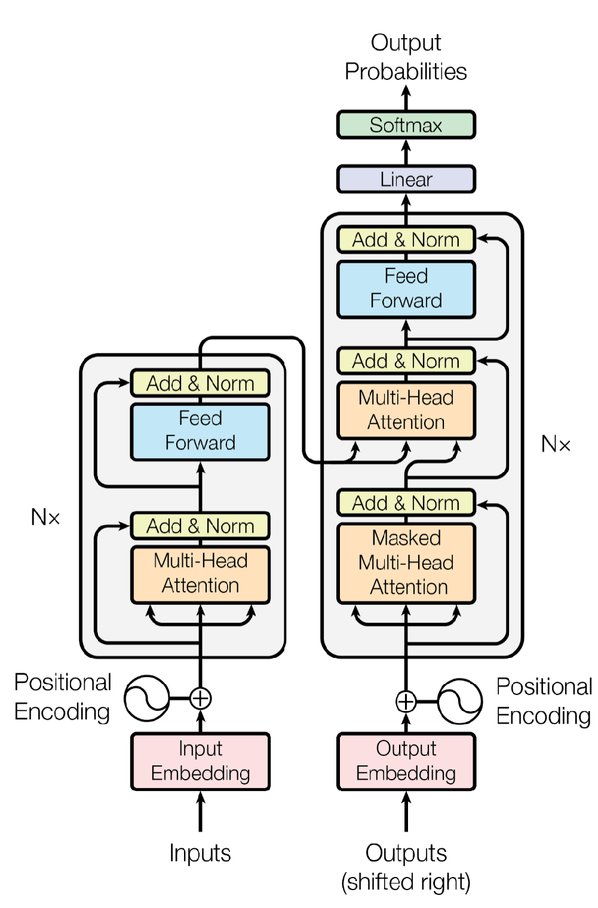

Transformers
Day 05 (18 April), Transformer and Attention Mechanism..
Day 05 overview
Day 05 - 18 April Transformer - Attention Mechanism
Understand the evolution from RNN → LSTM → Seq2Seq → Transformers
Recurrent Neural Networks (RNN)
Recurrent Neural Networks (RNN) - sequential or time-dependent data—where the order of inputs matters.
Key Concept: RNNs process sequences by maintaining a "memory" of previous inputs through hidden states (hidden state is the model’s internal memory that carries information from previous time steps to the current step).
At each time step:
- The network takes the current input
- Combines it with the previous hidden state
- Produces a new hidden state
This hidden state acts as the network’s memory, carrying information forward through the sequence.
Gradient :
Think of standing on a hill:
- The gradient tells you which direction is uphill
- And how steep the slope is
In machine learning, the “hill” represents the loss (error) function, and we want to go downhill to minimize error.
In Neural Networks
The gradient measures how sensitive the loss is to changes in each parameter (weights and biases).
⚠️ RNN Problems
- Vanishing Gradient: During backpropagation through time, gradients become extremely small, making it impossible to learn long-term dependencies
- Exploding Gradient: Gradients become too large, causing unstable training
- Short-term Memory: Cannot remember information from many steps back
LSTM
LSTM (Long Short-Term Memory)- Designed to remember information for long periods and avoid problems like vanishing gradients.
Solution to RNN problems
🚪 The Three Gates
1️⃣ Forget Gate: Decides what information to throw away from cell state
Example: Like cleaning your desk - you decide which papers to keep and which to throw away
2️⃣ Input Gate: Decides what new information to store in cell state
- Two parts: What to update + What values to add
3️⃣ Output Gate: Decides what to output based on cell state
👨🏫 Nooruddin: "The beauty of LSTM is that it solves the vanishing gradient problem. The cell state acts like a highway where information can flow unchanged."
👨🎓 Student Question: "Sir, why do we use sigmoid for gates and tanh for cell state?"
👨🏫 Nooruddin: "Excellent question! Sigmoid outputs 0-1, perfect for gates (like switches - on/off). Tanh outputs -1 to 1, better for cell state values which can be positive or negative."
⚠️ Even LSTM Has Limitations
- Still processes sequences sequentially (one word at a time)
- Cannot be parallelized - slow training
- For very long sequences (>1000 tokens), still struggles
- Computational cost increases with sequence length
Seq2Seq & Attention
Sequence-to-Sequence (Seq2Seq) : Seq2Seq is a neural network framework designed to transform one sequence into another sequence. It is widely used in NLP tasks like machine translation, summarization, and question answering.
Traditional ML models struggle when:
- Input and output lengths are different
- Output depends on full sentence context
- Order of words matters
High-Level Idea
Seq2Seq consists of two main components:
- Encoder → Reads input sequence
- Decoder → Generates output sequence
Encoder (Understanding the input)
The encoder processes input tokens one by one.
Steps:
- Input sentence is tokenized
- Each token is converted into embeddings
- RNN/LSTM/GRU processes sequence step-by-step
- Final hidden state summarizes entire input
Output:
A fixed-size representation called: Context Vector (thought vector)
Decoder (Generating output)
The decoder generates output word by word
Steps:
- Takes context vector from encoder
- Starts with special token <SOS>
- Predicts next word using previous output
- Continues until <EOS> token
Key property:
It is auto-regressive
- Each output depends on previous outputs
Limitation of Seq2Seq
Problem: Bottleneck issue
- Entire sentence compressed into single vector
- Long sentences lose information
👉 Example: Long paragraph → context vector becomes weak
Attention Mechanism (Improvement)
To solve bottleneck: Decoder does NOT rely only on final encoder state
Instead:
- It looks at all encoder hidden states
- Learns which words are important
This is called : Attention-based Seq2Seq
Transformer Model
Transformer Model – Complete Summary
The Transformer Revolution :
🎆 Why Transformers Changed Everything
✅ How Transformers Solve All Previous Problems
| Problem | Previous Architectures | Transformer Solution |
|---|---|---|
| Sequential Processing | RNN/LSTM must process word-by-word | Parallel Processing - All words at once! |
| Long-range Dependencies | LSTM struggles with 1000+ tokens | Self-Attention - Every word attends to every other word directly |
| Vanishing Gradients | Gradients diminish through layers | Skip Connections & Layer Norm maintain gradient flow |
| Training Speed | Slow due to sequential nature | GPUs can parallelize - Train on entire sequence simultaneously |
5.1. Background (Why Transformers?) ; 👉 Transformer = “Every word attends to every other word using attention instead of recurrence.”
Before Transformers, most NLP systems used:
- RNN / LSTM → process tokens sequentially (slow, hard to parallelize)
- CNN-based models → better parallelism but limited long-range dependency handling
- Seq2Seq with attention → improved translation, but still RNN-based bottleneck
Key Problem:
- Sequential processing made training slow
- Difficulty in capturing long-range dependencies
Key Idea of Transformer:
👉 Replace recurrence entirely with attention mechanism 👉 Enable full parallel processing of sequences
5.2. Model Architecture Overview
Transformer Architecture

Left architecture is the "Encoder" and the right is the "Decoder":
Transformer is a Sequence-to-Sequence (Seq2Seq) model with:
- Encoder stack
- Decoder stack
Two Main Components:
- Encoder: Processes input sequence and creates context-aware representations
- Decoder: Generates output sequence using encoded information
Each stack has N identical layers
Input Representation
2.1 Input Embeddings
- Input sentence → tokenized into words/subwords
- Each token → converted into vector of size d_model
👉 Output: Input Matrix: (sequence_length × d_model)
- Example:
- “I love NLP”
- 3 tokens → each mapped to embedding vector
2.2 Positional Encoding (PE) ; PE is a technique used in transformer-based models (like BERT, GPT, and BERT) to inject information about the order of tokens in a sequence.
Unlike Recurrent Neural Networks (RNNs) that process words sequentially, transformers process all words in parallel, which means they do not inherently know the order of words. PE provides this missing order information by adding a unique, positional vector to each input token's embedding
Since Transformer has no recurrence:
So we add:
- Positional encoding vector to embeddings
Formula intuition:
- Uses sine/cosine functions
- Encodes word position information
5.3. Encoder Architecture
Encoder: The encoder takes the input sequence and processes it through multiple layers of self-attention and feed-forward networks. It captures the contextual information of each word based on the entire sequence.
Each encoder layer has:
- Self-Attention
- Feed Forward Network (FFN)
- Add & Normalize
5.3.1 Self-Attention Mechanism
Instead of processing sequences step-by-step, Transformers look at ALL words simultaneously and learn which words are most relevant to each other.
"Imagine you're at a party. RNN is like talking to people one-by-one in a line. Transformer is like being able to see and hear EVERYONE at once, and deciding who to pay attention to!"
Attention Mechanism - The Heart of Transformers
The Famous "Apple" Example
Sentence: "I ate an apple while using my Apple laptop."
The Problem: The word "apple" appears twice but has completely different meanings!
- First "apple" = Fruit 🍎 (should attend to "ate")
- Second "Apple" = Company 💻 (should attend to "laptop", "using")
The Solution: Attention mechanism makes embeddings context-aware!
🔑 Query, Key, Value (QKV) - The Core Concept
Each token generates:
- Query (Q)
- Key (K)
- Value (V)
Example :
Library Analogy:
Imagine you're in a library looking for books about Machine Learning:"
- Query (Q): What you're looking for = "I need Machine Learning books"
- Key (K): Labels on each book = "This book is about: Deep Learning, NLP, Computer Vision..."
- Value (V): The actual content of the books
🔑 Interactive QKV Flow
You compare your Query with all the Keys to find which books are most relevant, then you read those Values!
Attention computation:
- Compare Q with K → similarity score
- Apply softmax → weights
- Multiply with V → output representation
5.3.2 Multi-Head Attention
Multi-head attention in the encoder block: plays a crucial role in capturing different types of information and learning diverse relationships between words. It allows the model to attend to different parts of the input sequence simultaneously and learn multiple representations of the same input.
Instead of one attention:
👉 Use h parallel attention heads
Each head learns different patterns:
- Syntax
- Semantics
- Word relationships
Final output:
- Concatenate heads
- Linear projection
🔄 Attention Flow
5.3.3 Feed Forward Network (FFN) : Applied independently to each position and Adds non-linearity and feature transformation
3.4 Add & Normalize
Each sub-layer uses:
Residual Connection:
- Input + Output
Layer Normalization:
- Stabilizes training
👉 Helps gradient flow and deep stacking
5.4. Decoder Architecture
Decoder: The decoder generates the output sequence word by word, attending to the encoded input sequence's relevant parts. It also includes an additional attention mechanism called "encoder-decoder attention" that helps the model focus on the input during decoding.
Decoder is similar to encoder but includes:
- Masked Self-Attention
- Encoder-Decoder Attention
- Feed Forward Network
- Add & Normalize
Masked Multi-head attention in the decoder block: the same as Multi-head attention in the encoder block but this time for the translation sentence, is used to ensure that during the decoding process, each word can only attend to the words before it. This masking prevents the model from accessing future information, which is crucial for generating the output sequence step by step.
Multi-head attention in the decoder block: do the same as the Multi-head attention in the encoder block but between the input sentence and the translation sentence, is employed to capture different relationships between the input sequence and the generated output sequence. It allows the decoder to attend to different parts of the encoder's output and learn multiple representations of the context.
5.4.1 Masked Multi-Head Attention
Used during training/inference:
👉 Prevents looking at future tokens
Example:
- Predict word 3 → cannot see word 4 or 5
This ensures:
- Auto-regressive generation
5.4.2 Encoder-Decoder Attention
- Queries come from decoder
- Keys & Values come from encoder
👉 Helps decoder focus on relevant input words
Example:
- Translating English → French
- Decoder attends to encoder outputs
5.5 Why Transformer Works Better
Compared to RNN/LSTM:
- No sequential bottleneck
- Fully parallel training
- Better long-range dependency handling
Compared to CNN:
- Captures global relationships directly
5.6 Output:
The final layer of the decoder is a linear projection followed by a softmax activation function. It produces a probability distribution over the vocabulary, allowing the model to generate the output word by sampling from this distribution.
Softmax & Linear Projection:Softmax : It is used to convert the output of the linear projection into a probability distribution. It ensures that the sum of the probabilities is equal to 1, allowing the model to generate the output word by sampling from this distribution.
Linear : Convert the embeddings to word again (it just has weights not biases.)